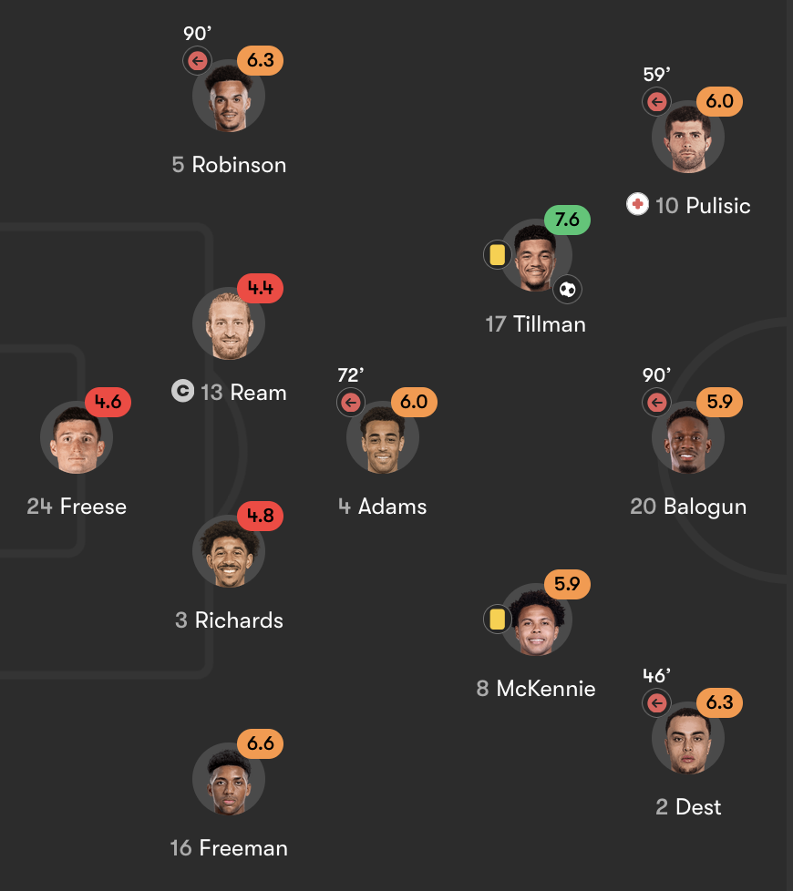

A dreamy beginning, a pathetic loss, and a promising future for the USMNT after the 2026 FIFA World Cup.
The USMNT has been out of the 2026 FIFA World Cup as a co-host after the 1-4 loss to Belgium in the Round of 16, following Canada (0-3 vs Morocco) and Mexico (2-3 vs England). I want to write a whole post about the USMNT's run. I'm going to discuss this as someone who knows balls and watches all their games.
Disclaimer: I'm not talking about Balogun's red card suspension or any politically driven decisions behind this World Cup and the USMNT specifically. This post is a purely soccer-focused insight.
I watched all the games of the USMNT in the 2022 World Cup and some games in the 2014 World Cup. Their playing style was distinguishable: barely attacked, had little to no goals each game, relying on 1 to 2 stars, defended to death, etc. Basically, a type of playing style from an underdog. And did it work? I would say sometimes. I'm not talking about their best record at the World Cup in 1930, because only 4 teams advanced to the second round out of 13. They won against Portugal and Mexico in the Round of 16 before losing to Germany by 1 goal in the quarterfinals. It was considered the prime era of Landon Donovan and Brad Friedel, and, statistically, that's the record number of World Cup games that they could play. Despite that record, the USMNT has never been considered a strong team, and their attack hasn't been their strength.
Highlights of the USMNT in the World Cup 2002.
However, when the 2026 World Cup started, or, should I say, when Mauricio Pochettino took over the role of the team's coach, a new playing style appeared. This was the first time the USMNT really dominated a team in terms of ball possession, chances, and tactics. Their game with Paraguay was definitely the best one, as they went pressing aggressively from the beginning, destroying Paraguay's hyper-defensive tactics and leading to their biggest win in the World Cup since 1930. Some of my friends said that the team really played like Barcelona in their prime thanks to the tiqui-taka playing style.
That game was so hyped that I decided to stay up until 3 am just to watch every pre-World Cup friendly game of the USMNT, specifically the games with Senegal, Belgium, Paraguay, Uruguay, and Portugal. Most people would be surprised by the new playing style from Pochettino; however, it was not a new thing. In those games that I just mentioned, the team mostly relied on fast-paced possessions, aggressive pressings, and a long pass reaching Balogun, their main striker. They played relatively well against Uruguay (5-1), Paraguay (2-1), and Senegal (3-2) - they dominated those games. They lost to Portugal 0-2, Turkiye 1-2, and Belgium 2-5, but most comments said that the performance of the USMNT was promising. I would like to praise this strategy because, indeed, the team faced, or would have faced, the majority of these teams in this World Cup. Paraguay, Australia, Turkiye, and Belgium. Portugal would be a potential matchup in case they won the Round of 16 (which indeed didn't happen, as they lost to Spain). This eliminated the poor preparation that noticeably happened from the 50s till the late 80s.
On the contrary, the fact that the USMNT manages to attack from the beginning sounds like a naive decision to me. It is always exciting to watch a team that scores a ton of goals and constantly attacks in a game. The harsh reality here is that absolutely no team lets its opponents attack and score that easily. That's even more accurate when it comes to European teams - the oldest soccer region, or South American teams - the most cunning region. If the US decides to attack like this, they gotta sacrifice their defense in many ways. This approach is good when they play against teams that aren't good at counterattacking. Once they use these tactics against bigger teams, a simple counterattack could put their defense in danger, as they never have enough players for quick defensive transitions. The pathetic loss versus Belgium is a prime example of this.
All 4 goals from the USMNT versus Belgium came from rookie mistakes by the defense. Belgium's first two goals were a result of offside trap errors and zero clear defensive effort to block Charles de Ketelaere's shots. The second half definitely showed the most pathetic performance since the beginning of the 2026 World Cup. A critical mistake from Matt Freese, the goalkeeper, created an easy empty net goal for Hans Vanaken and the 3rd for Belgium in the 57th minute. And in the very last chance of the game, instead of safely allowing a corner for Belgium, the USMNT's defenders failed to win the ball from Romelu Lukaku, and he easily scored the 4th goal, and 4-1 for Belgium. This quick match summary should explain why Tim Ream, Chris Richards, and Matt Freese have the lowest score among the team, according to FotMob.

Score of the starting XI of the USMNT vs Belgium, according to FotMob.
If you didn't watch a single minute of this game and see this score, it is easy to say, "Of course, Belgium is way better. The US is never good at soccer." That's fair. You may refer to the earlier friendly match with Belgium, which the USMNT lost 2-5. And that's fair too. However, I would recommend watching the game highlights, at least. Despite having more shots, Belgium didn't seem to aggressively attack like the US. They relied on counterattacks, which worked well as the USMNT tended to push most of their players on Belgium's side. But, optimistically speaking, the way the team attacked felt like they were about to have real chances, and the team lost that horribly because they shot themselves in the foot by repeatedly making rookie mistakes in an important knockout game. I was blaming Belgium for their poor performance in the first 2 games with Egypt and Iran, but it is fair to say, it is a bad idea to underestimate Belgium as, at the end of the day, they are a decent European team, and they are experienced enough to punish a silly mistake from their opponents.
Explaining the USMNT's loss to bandwagons or those who don't watch soccer: they gave the ball to Belgium so that they could score without any effort to stop it, and it happened 4 times.
The World Cup journey is over for the USMNT. No more "USA!" chants, and I believe there will not be any other matches in this World Cup where Americans fill most of the stadium seats. And, personally, I will miss these moments. For the very first time in my life, I have witnessed the very own chants of the US and the common enthusiasm of each American when the USMNT plays a game. I didn't watch the 1994 World Cup, so I couldn't tell if that enthusiasm was also a thing. It never happened when the team played and hosted Copa America (surely the tournament is for CONMEBOL / mostly South American teams, and the US is just a guest team).
The 2026 World Cup, more or less, created a trend among Americans, at least on social media. My Instagram reels are all about random Instagram girls mentioning the World Cup in different aspects. Allow me to list some, although they are not about the USMNT:
As someone who knows the ball, it indeed sounds childish to me, because it has nothing to do with the actual game. Ok, that sounds like an ignorant take - I decided to watch more reels about the World Cup. I'm ok with those people's opinions, and, honestly, I'm happy with that. As a nation that believes American football is a religion, it is astonishing to see more love for soccer from Americans. Obviously, they are not going to be soccer lovers any time soon, but surely they know soccer exists in the world and in the US specifically. Perhaps this World Cup is a good opportunity to improve Americans' geography skills. (and they still suck though, deadass.)
This is the 9th appearance of the USMNT since the 1990 World Cup, excluding the failed attempt in 2018. Why did I mention the 1990 World Cup? Because it was the end of their 40-year World Cup drought, the dark age of soccer in the US. A lot of poor decisions from the US Soccer Federation, poor preparation, and lack of development almost killed soccer there [1]. They even lost to Canada in World Cup qualifiers in that era, which is crazy (and not crazy), knowing that Canada is a fellow non-soccer country. Fast forward to 2026, the USMNT has scored the most goals (11) in their World Cup history (yet tied for the most conceded goals, 8) and finished first in the group stage for the first time since 2010. To be fair, it is a decent performance for a country that used to not play a single World Cup game for 40 years straight. And, optimistically, most of their players are playing in European teams, and they are young. Some solid players include Christian Pulisic, Malik Tillman, Folarin Balogun, Tyler Adams, Weston McKennie, and Sergiño Dest. Their skills are decent, and their mindset is fairly modern. The 2026 World Cup run was a good opportunity for those players to find out and learn from their mistakes in order to be more critical and resilient in their future careers, a foundation to revolutionize the US soccer situation.